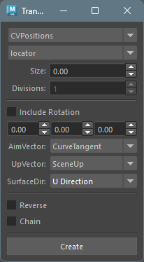

Transform Creator on Curve
起動方法
専用のメニューか、以下のコマンドでツールを起動します。
import faketools.tools.rig.transform_creator_on_curve_ui
faketools.tools.rig.transform_creator_on_curve_ui.show_ui()
使用方法
- 上部のドロップダウンメニューから、トランスフォームの作成方法を選択します。
- シーン上の NURBS サーフェース及びカーブを選択します。そのノード自体かトランスフォームノードを選択します。
- それ以外のオプションを設定します。グレーアウトされていないオプションを設定可能です。
- [ Create ] ボタンを押すことでトランスフォームノードが作成されます。
オプション
- ノードタイプ
- locator か transform のどちらかを選択します。
- Divisions
- 作成方法が innerDivide の時のみ有効です。選択したノード間を何分割するかを設定します。
- IncludeRotation
- 作成するトランスフォームノードに回転属性を含めるかを設定します。
- 回転をオフセットする値
- 作成されたトランスフォームノードに対して、回転をオフセットする値を設定します。
- AimVector
- 作成されるトランスフォームノードのエイムベクトルを取得する方法を設定します。
- CurveTangent
- カーブの接線ベクトルを取得します。
- NextPoint
- 作成されるトランスフォームノードの次の順番のノードのポジションへのベクトルを取得します。
- PreviousPoint
- 作成されるトランスフォームノードの前の順番のノードのポジションへのベクトルを取得します。
- CurveTangent
- 作成されるトランスフォームノードのエイムベクトルを取得する方法を設定します。
- UpVector
- 作成されるトランスフォームノードのアップベクトルを取得する方法を設定します。
- SceneUp
- シーンのアップベクトルを取得します。[0, 1, 0] です。
- CurveNormal
- カーブの法線ベクトルを取得します。
- SurfaceNormal
- カーブが属するサーフェスの法線ベクトルを取得します。この時のカーブは duplicateCurve コマンドで作成されたものである必要があります。そうでない場合、強制的に CurveNormal が適用されます。
- SceneUp
- 作成されるトランスフォームノードのアップベクトルを取得する方法を設定します。
- SurfaceDir
- NURBS
サーフェースを選択している場合、サーフェースのどの方向をカーブの法線ベクトルとして使用するかを設定します。
- U Direction
- サーフェースの U 方向を使用します。
- V Direction
- サーフェースの V 方向を使用します。
- U Direction
- NURBS
サーフェースを選択している場合、サーフェースのどの方向をカーブの法線ベクトルとして使用するかを設定します。
- Reverse
- トランスフォームノードが複製作成された場合、その順番を逆にするかを設定します。
- Chain
- トランスフォームノードが複製作成された場合、それらをチェーン状の階層構造にするかを設定します。
作成方法
- CVPositions
- カーブの CV の位置にトランスフォームノードを作成します。
- EPPositions
- カーブの エディットポイント の位置にトランスフォームノードを作成します。
- CVClosestPositions
- カーブの CV に最も近いカーブ上の位置にトランスフォームノードを作成します。
- ParameterPositions
- カーブのパラメーター値から等間隔にトランスフォームノードを作成します。作成されるノードの個数は Divisions で設定します。
- LengthPositions
- カーブの長さから等間隔にトランスフォームノードを作成します。作成されるノードの個数は Divisions で設定します。
- CloudPositions
- カーブの弦長を等間隔にするようにトランスフォームノードを作成します。作成されるノードの個数は Divisions で設定します。
- 閉じられたカーブの場合、失敗する可能性があります。